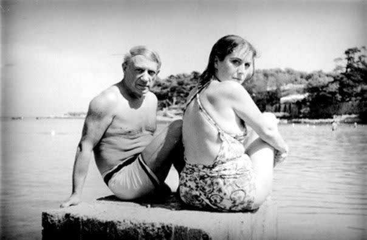
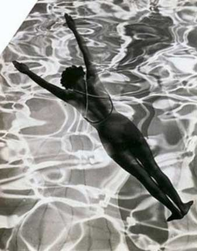

BIOGRAFIA
Dora Maar fue una de las fotógrafas más destacadas de los años 30 y de las vanguardias francesas del siglo XX. Su obra, inicialmente centrada en la fotografía urbana y de moda, se caracterizó por su experimentación con técnicas como las dobles exposiciones. A finales de la década de 1930, se vinculó al movimiento surrealista, influenciada por artistas como Man Ray, y se convirtió en una figura reconocida en la escena artística parisina.
Aunque su carrera floreció, su vida personal se vio marcada por su relación con Pablo Picasso, quien la inspiró y la retrató en numerosas ocasiones. Durante esta relación, Dora se alejó de la fotografía y comenzó a dedicarse a la pintura, pero su salud mental se deterioró debido a las tensiones personales y políticas de la época. Tras sufrir una crisis emocional, pasó por un tratamiento psiquiátrico y fue olvidada por muchos de sus contemporáneos.
Los últimos años de Dora Maar fueron más solitarios, pero continuó creando, enfocándose en la pintura. Falleció en 1997, casi desconocida, pero su legado continúa siendo redescubierto por nuevas generaciones.
Descubre la vida de Dora Maar
Dora Maar: una fotógrafa surrealista única Descubre la fascinante vida de Dora Maar, una de las figuras más intrigantes del surrealismo. Con una carrera marcada por su talento excepcional y su relación con Picasso, Dora capturó lo oculto y perturbador de la realidad a través de sus impresionantes fotomontajes. ¿Sabías que su obra fue una influencia clave en la fotografía de vanguardia? Haz clic para conocer más sobre su legado artístico y su visión única.
La carrera de Dora Maar: una evolución artística única
Explora la carrera de Dora Maar, una fotógrafa cuyo talento y conexión con el surrealismo la colocaron entre las figuras más influyentes del siglo XX. Desde su colaboración con Picasso hasta su desarrollo artístico personal, su trayectoria estuvo marcada por períodos clave que reflejan su evolución. Haz clic para conocer cómo su obra trascendió más allá de su relación con Picasso.
